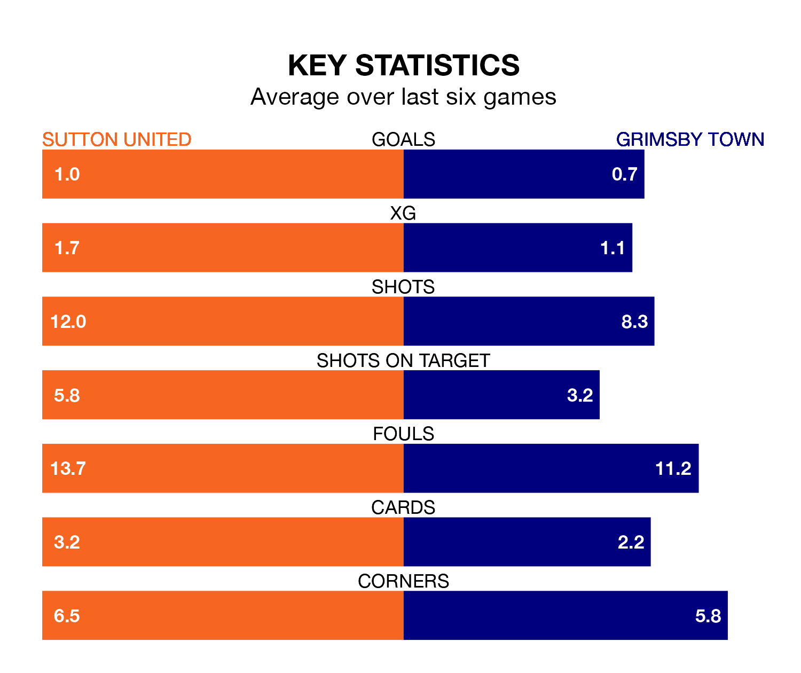

Saturday's match at the VBS Community Stadium sees two relegation candidates play each other, as bottom of the table Sutton United host 21st-placed Grimsby Town.
Sutton have picked up 26 points from their first 26 EFL League Two games, with five wins and 11 draws.
That is eight points less than the Mariners have collected, having won seven and drawn 13.
Sutton are in bad form in EFL League Two, with one win and a draw from their last six games.
With a win and three draws over that period, Grimsby's form is slightly better – they have taken six points from 18, compared to United's four.
With 40 goals in 36 games so far this season, the Us are the league's third-lowest scorers with 1.1 goals per game. And they are conceding more than average, letting in 68 goals at a rate of 1.9 per game.
Town are also below average scorers, with 1.3 goals per game, compared to a league average of 1.5. They have conceded 1.8 goals per game.
In the last three years, Sutton and Grimsby have played each other on three occasions. Grimsby won one of them and they drew the other.
Their last meeting was on November 25, when they played out a 1-1 draw.
Sutton's last match was on March 2, a 1-0 loss against Tranmere Rovers.
Grimsby drew 0-0 with AFC Wimbledon last time out, on Tuesday.
Saturday's match will be refereed by Alex Chilowicz, who has taken charge of seven EFL League Two games so far this season, issuing no red cards and booking 26 players. He has not awarded any penalties.
The last Sutton game Chilowicz refereed was a 2-0 home loss to Mansfield Town on December 23. He is yet to oversee a match featuring Grimsby this season.
Updated: 09:34 (UTC), 08/03/24